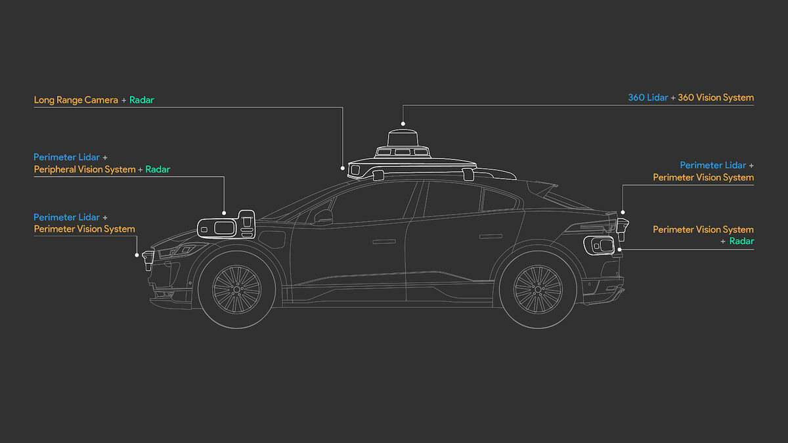
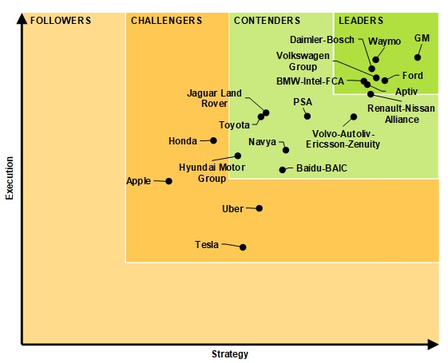

Present
The current state of the self-driving car is an exciting state of progress and innovation with many different organizations racing to be at the forefront. At the current state, autonomous vehicles can be classified on a scale of 0-5 (6 levels total) where level 0 is no automation and level 5 would be full automation. In the current state of things, the vehicles being developed are at level 4 which do not require human interaction in most circumstances.
Self-driving cars of today utilize technologies from many related fields to make it all possible. Most notably, a system of Radar, Lidar, and Cameras are the most important components for self-driving cars. Other technologies include the computers behind the systems themselves and the HD maps which are fed into the vehicles.
A fundamental key to the self-driving car is the utilization and growth of Data Science and Machine Learning. Machine learning is the process of using training data to teach a computer to cognitively behave and make decisions similar to a human. Machine learning serves a key role in teaching a car to drive by modeling after humans. Without the technology behind machine learning, the self-driving car would not be able to progress to the point it has today.
To properly understand the importance of data science in autonomous vehicles, one must first understand data science itself. Data science is a principle of drawing value and conclusions from data. One of the related fields of Data Science is machine learning in which a computer is able to learn similar to a human. As self-driving cars are built on the principles of replacing the human, machine learning is a crucial component to solving the self-driving car. By feeding in sensory data of it’s surroundings and knowledge of how to drive a car, a computer is able to make decisions and replicate human driving.
When discussing self-driving technologies, there are multiple companies/names that come to mind. The more well-known names such as Tesla, Uber, and Google are big players in the self-driving landscape, but there are definitely non household names that are big players as well. Companies such as China’s Baidu and GM’s Aptiv are also far ahead in autonomous vehicle development all within the stages of testing.
As of now, there are no true level 5 full self-driving cars where no human interaction is needed. All vehicles with self-driving capabilities still require a human driver to be ready to take the wheel at any moment. The technology has come a long way, but there is still a bit to go before we reach the completely autonomous vehicle. For a true autonomus vehicle, a steering wheel would not even be necessary.